Ao chegar no IFRS, em uma manhã ensolarada, com uma clara intenção em mente: se tornar o presidente do grêmio estudantil da escola, porém, para isso será necessário conseguir votos, assim que você entra na instituição, você nota que o lugar mais movimentados é o pátio da escola
Você volta para o pátio, e percebe um novo aluno que pode ser convencido a votar em você:
Você escuta o sinal da escola, é o horário da aula, mas sempre há tempo para convencer mais pessoas
Ao terminar essa conversa, você percebe outra pessoa chegando:
Ainda há tempo de tentar convencer mais um antes do professor chegar:
O professor chegou, hora de prestar atenção na aula.
Você escuta o sinal da escola, é hora do intervalo.
Assim que você sai da sala para iniciar o intervalo, você percebe 2 lugares onde podem ter pessoas que devem ser convencidas a votarem em você.
Agora só restou ir para o outro lugar:
O intervalo acaba, é hora do resultado das eleições
Quando você entra na biblioteca, logo vê que uma pessoa está vindo na sua direção com um celular na mão.
Assim que o Enzo sai da biblioteca, você vê outra pessoa chegando.
Não há mais ninguém para conversar aqui, melhor voltar
Assim que você chega na cantina, percebe que o Vinícius está conversando com algumas outras, parece que ele está falando algo sobre um cassino, você não consegue ouvir direito, assim que ele te vê, o Vinícius vem na sua direção.
Logo depois dessa conversa peculiar, você vê outra pessoa se aproximando
Não há mais ninguém para conversar aqui
É isso. Boa sorte aí. Não perca tempo discutindo quem tá certo; use o tempo pra fazer campanha. A gente se vê.
Logo que você entra na escola, percebe que uma bola de futebol para bem perto na frente de seus pés, quando isso acontece, você percebe que alguém está vindo buscar ela, e ele estende a mão para te cumprimentar.
Buenos dias candidato, parece que a pelota procura o craque né? Mais e aí como estão indo as eleições?
Hum… cuidado com esse tranquilo. Quando parece fácil demais, é porque alguém tá deixando. Mas fala aí, tá nessa para ganhar ou para mostrar serviço?
Normal, ninguém aposta em quem está começando, mas acredito em você, mas se for desistir de tudo, nem entra nessa.
É… também já me cansei. Mas eu continuei. Reclamar é a parte fácil.
Entendo. Mas ninguém faz tudo sozinho pra sempre. Às vezes, alguém aparece pra ajudar, você só não percebe.
Hm… tá com raiva de alguém ou de tudo? Cuidado pra não virar aquele cara que acha que é melhor que o grupo.
É, confiança faz o projeto andar. Senão, cada um trabalha só para o próprio nome.
É… mas quem busca só a vitória esquece de aproveitar a jornada.
Aí sim. Quando a motivação é boa, o resultado vem junto.
Claro que é. Só não dá pra ser o único motivo. Senão, perde o sentido.
Verdade. Às vezes, perder ensina mais que vencer. Só tenta não perder o foco.
Dificuldade é parte do caminho. Ficar olhando a vitória dos outros não constrói a sua. Você tem que focar no seu passo. Reclamar é a parte fácil.
A luta de todo mundo é invisível até que ela dê resultado. Eu respeito isso. Continue fazendo o seu.
E aí, você acha que tem chance mesmo? Ou é mais um desses que fala bonito e some depois?
Confiança é bom, mas cuidado pra não soar convencido.
Justo. Às vezes tentar é o que falta pra metade da galera.
É isso cara, obrigado pela conversa!
E aí, candidato! Chegou na hora certa. Tô aqui vendo o caos no pátio. Qual é a sua prioridade? Arrumar as coisas por partes ou prometer uma revolução total?
Gosto de quem pensa no básico. Mas, no fim, você quer resolver problemas ou ganhar fama?
Mudar tudo? E qual seria a sua grande bandeira para essa revolução?
Justo. A escola tem muita coisa boa, mas os espaços estão mal cuidados. Por onde você começa?
Justíssimo, mas a parte burocrática é a mais chata. Como você garante que todos os alunos vão participar e fiscalizar?
Interessante. Mas e a variedade e qualidade do que é servido na cantina?
Beleza então, até mais tarde! Você demonstrou que entende os fundamentos. Agora é só colocar em prática!
Buenas people que comecem os Jogos! Vamos testar seus conhecimentos básicos em HTML, CSS e JS.
Pergunta 1: Qual tag do HTML usamos para agrupar o conteúdo principal e mais importante que aparece na tela do usuário?
Pergunta 2: No CSS, qual símbolo usamos para selecionar um elemento por seu `id` (identificador único)?
Pergunta 3: Qual palavra-chave no JavaScript usamos para declarar uma variável cujo valor **não** deve ser alterado?
Pergunta 4: No CSS, se um elemento pai tem `display: flex`, qual propriedade usamos para colocar os itens lado a lado (na horizontal)?
Pergunta 5: A pergunta de milhões! Como Centralizar uma DIV, valendo 3 pontos na média!!
Acho que daqui a pouco a aula vai começar, vou indo para o meu lugar.
Ei, você foi legal comigo, toma, tenho isso aqui que pode te ajudar a conseguir alguns votos.
Fala aí… candidato, né? Vai sentar aqui ou tá caçando voto?
Boa. Melhor fingir que tá prestando atenção do que ter que participar. Eu tava vendo um review aqui. Nada demais, só pra distrair a cabeça. E aí, como tá tua campanha? Tão te levando a sério ou tão achando que é só mais um prometendo coisa?
Wi-Fi tem, mas é instável. Igual a paciência da coordenação. Tu tá fazendo campanha ainda, né? Tão falando disso na turma.
Hm. Legal. O pessoal gosta de quem fala tranquilo. Sem teatro. Continua assim.
Brigadeiro? Sério isso? Cara… isso é meio genial. Se ele tá comprando voto com doce, cê vai ter que pensar rápido.
É, boa sorte com isso. O povo gosta de quem fala reto. Se começar a prometer demais, já era. Só não tenta agradar todo mundo. Isso nunca funciona.
Vi isso no grupo. Tá rodando em tudo quanto é story. O cara virou confeiteiro agora. Você devia responder de algum jeito. Não igual, mas algo que chame atenção também.
Hm. Funciona, mas parece cópia. Faz algo que tenha tua cara, não a dos outros.
É. Até porque se todo mundo começar a dar comida, vira cantina, não eleição.
Aí sim. Mostra que cê tá ligado no que rola.
Muito bem, experiência social concluída. Eu voltarei às minhas atividades intelectualmente superiores como organizar meus bonecos do Star Trek por ordem de relevância científica.
Interessante conversa. Estatisticamente, 92% dos diálogos que tenho são menos toleráveis. Parabéns por estar no top 8%. Além do mais, aqui está uma recompensa por estar no meu top 8%.
Finalmente, alguém com potencial intelectual sentou por aqui. Ou você só veio colar de mim?
Tranquilidade é um estado quântico instável numa sala cheia de adolescentes. Mas... vou permitir que sua presença não interfira no meu campo de concentração. E, se você ficar quieto, talvez consiga absorver 0,03% da minha genialidade por osmose. Mas aviso: o processo é lento e frustrante.
Ah! Finalmente, uma pergunta digna de ser respondida por alguém com QI acima da temperatura ambiente. A política é uma simulação social defeituosa: egos em conflito, alianças instáveis e promessas que desafiam qualquer princípio lógico. É basicamente a versão humana de um sistema operacional mal programado.
Hmph. Ao menos você entende o conceito de campo quântico, ainda que de forma primitiva. Isso já te coloca acima da média estatística dos seus colegas.
Engraçado. Humor defensivo é a primeira reação de quem percebe a própria inferioridade intelectual. Mas... ponto pela ousadia.
Lógica na política? Isso seria como esperar coerência em uma reunião de familiares. A lógica é imutável, a política é mutável... e frequentemente irritante.
Hah! Uma hipótese ousada! Mas temo que a humanidade falhe nesse teste há milênios. Se a lógica fosse um critério de sobrevivência, estaríamos extintos.
Excelente. Se todos fossem tão conscientes quanto você, talvez eu não precisasse trancar minhas canetas científicas em um cofre à prova de burrice. Agora, silêncio: a genialidade precisa de espaço.
Uhm, sarcasmo. O último refúgio dos intelectualmente medianos. Só espero que o universo não dependa do seu humor... senão estamos todos condenados.
Hm, interessante. Um ser humano tentando me igualar em sarcasmo. Admiro a coragem, ainda que a execução precise de... ajustes. Continue tentando talvez um dia alcance o nível de ironia do meu café da manhã.
Desafios intelectuais são bem-vindos. Mas a linha entre ousado e autodestrutivo é tênue. E você está... perigosamente perto dela. Impressionante e um pouco preocupante.
Exatamente. A política é o caos tentando usar terno e gravata. Enquanto a ciência busca verdades universais, os políticos disputam quem mente com mais elegância.
Ah, o velho dilema entre ordem e liberdade. Sem política, teríamos anarquia. Com política, temos... anarquia organizada. O ser humano é um paradoxo fascinante e cansativo.
Inevitável e previsível, como o colapso de uma função de onda. O caos é o padrão natural do universo e a tentativa humana de controlá-lo é... adoravelmente fútil.
Desistir implica que eu algum dia acreditei. Eu apenas observo como um cientista diante de um experimento que insiste em explodir. A diferença é que, neste caso, a explosão vota.
Experimente equilibrar os dois. Humor ou lógica demais sem o outro é morte certa. No meu caso, é literal… aqui, é só reputação política. Sobreviver à aula foi fácil… sobreviver ao grêmio vai ser interessante. Vá com cuidado, candidato. Eu vou observar.
Olha só… o candidato resolveu estudar. Achei que já estivesse vendendo promessas pelo corredor.
Não me interesso. Só vim ver o circo. Mas você? Está aqui por curiosidade ou por medo de perder votos?
Competitivo, gostei. Só não transforme isso em discurso de campanha. Aprender é bom, manipular é opcional.
Hmpf. Curiosidade é a desculpa mais elegante que conheço para incompetência. Mas pelo menos você tenta aprender algo. Isso já é mais que a média da sala. Considere isso um aviso: política e medicina compartilham um problema. Muitos acreditam saber o que estão fazendo. Sobreviver ao grêmio é mais fácil que sobreviver a um paciente meu. Mas pelo menos aqui ninguém morre de verdade.
Ah, sim. Estratégia… ou manipulação disfarçada de interesse. Bom, pelo menos você não está tentando ganhar popularidade com chocolate grátis. Considere isso um aviso: política e medicina compartilham um problema. Muitos acreditam saber o que estão fazendo. Sobreviver ao grêmio é mais fácil que sobreviver a um paciente meu. Mas pelo menos aqui ninguém morre de verdade.
Hmpf. Ingênuo… mas eficiente. Gosto disso. Só não se iluda pensando que todo mundo valoriza competência. Alguns votam pelo drama. Considere isso um aviso: política e medicina compartilham um problema. Muitos acreditam saber o que estão fazendo. Sobreviver ao grêmio é mais fácil que sobreviver a um paciente meu. Mas pelo menos aqui ninguém morre de verdade.
Bom… gosto de quem pensa estrategicamente. Mas cuidado: quem depende demais da munição errada explode na própria mão. Considere isso um aviso: política e medicina compartilham um problema. Muitos acreditam saber o que estão fazendo. Sobreviver ao grêmio é mais fácil que sobreviver a um paciente meu. Mas pelo menos aqui ninguém morre de verdade.
Ok, candidato. Hora de testar suas habilidades. Suponha que eu seja um eleitor… e eu odeio políticos que prometem o que não podem cumprir. Como você me convenceria a votar em você?
Ah, competência… raro e delicioso. Mas atenção: ninguém vota só pelo que você sabe. Querem ver resultado. Qual seria seu exemplo de resultado real aqui no IFRS?
Humor, sim… mas cuidado, candidato. Rir não significa confiar em você. Mas mantém a atenção. Agora me diga: como seu humor reforça sua campanha sem parecer vazio?
Inclusão social. Não é ruim. Mas lembre-se: nem todo mundo valoriza esforço coletivo, alguns preferem os holofotes.
Técnico e direto. Gosto disso. Quem valoriza função prática sobre discurso vazio merece meu respeito.
Interessante… sarcasmo com propósito. Só não perca o limite: sarcasmo demais e você parece arrogante.
Memes… hmpf. Populismo digital, mas eficaz. Se usado certo, pode ser arma poderosa.
Obrigado pela conversa, acho que eu vou indo.
Olá, candidato… Veio estudar ou só fugir da correria do refeitório?
Hahaha, clássico! O candidato sabe onde encontrar conhecimento… ou pelo menos diversão no meio dos livros.
Mas me diz: prefere estudar sério ou improvisar e aprender na marra?
Hahaha, gostei! Nerd fudido que sabe se virar… isso já me conquista.
Boa! Mostra iniciativa… agora você tá no caminho certo pro meu voto.
Ok, disciplina é respeitável… mas cuidado pra não ficar chato.
Agora sim, candidato completo. Gosto de gente que sabe equilibrar.
Ah, então você veio se esconder… gosto do estilo. Mas não dá pra fugir do mundo totalmente, hein?
Me diz: prefere passar o tempo sozinho estudando ou misturar com gente legal?
Hm, nerd solitário… típico e eficiente. Mas meu voto? Ainda não ganhou.
Hahaha, só observando? Sem risco, sem conquista. Ainda vai ter que suar pra conseguir meu voto.
Hahaha, finalmente alguém que entende! Sociável, mas ainda nerd… tá no caminho certo.
Ótimo, isso sim é iniciativa. Agora você tá ganhando pontos comigo!
Hahaha, só observando? Sem risco, sem conquista. Ainda vai ter que suar pra conseguir meu voto.
Tchau
Theo cruza os braços, sorrindo de lado. — E aí, candidato. Veio pra dominar o campus ou ainda tá tentando descobrir onde fica a sala de aula?
Theo ri. — Gosto de confiança. Analítico e determinado… já comecei a simpatizar.
Theo dá uma risada curta. — Pelo menos é honesto. Mas calma, aqui o mapa é mais psicológico que físico.
— Improvisar com lógica... isso é raro. Gostei do estilo.
— Hm… então é do tipo que fala antes de pensar. Interessante, mas perigoso.
— Boa, gosto de quem pede ajuda, mas pensa junto. Cooperação é inteligência social.
— Hahaha, beleza, aventureiro. Só cuidado pra não virar o próprio enigma.
Só cuidado para não se precipitar
Theo ergue uma sobrancelha. — Hahaha, pelo menos é sincero. Mas cuidado, sinceridade sem filtro pode ser queda livre.
Theo ri. — Ok, vou admitir, tem coragem. Isso conta pontos comigo.
— Gostei da atitude. Sabe, às vezes o que falta aqui é gente que encara as coisas com humor.
Theo sorri. — Inteligente e sociável. A combinação certa pra se destacar.
Theo encosta na mesa, rindo. — Carisma de sobra, hein? Me lembra minha fase de calouro.
— Sabe o que eu gosto? De gente que fala olhando nos olhos. E você tem esse hábito.
Theo sorri de canto. — Acho que vou lembrar de você, candidato. E isso é bom sinal.
Obrigado pela conversa mano, tchau.
E aí, candidato. Vai sentar e observar ou tentar se enturmar? Primeiro teste: coxinha ou pão de queijo?
Certo, coxinha. Todo mundo gosta. Mas só comida não garante voto. O que mais você traria pro grêmio? Alguma ideia fora do comum?
Pão de queijo, beleza… mas não é minha favorita. E você é do tipo que faz ou do tipo que só fala?
Show. E olha… em vez do restaurante universitário, dava pra ter um mini cassino no IF, só pra fazer algo diferente.
Organização é bom… mas talvez só isso não empolgue o pessoal. Tipo, podia inventar umas coisas malucas, tipo mini cassino no IF.
Certo, faz sentido. Ação é importante. E talvez a gente pudesse inventar algo maluco no IF, tipo um mini cassino pra campanha, só pra ver a reação da galera.
Estratégia faz sentido, mas só pensar não resolve. Tava pensando, dava pra tentar umas ideias malucas tipo cassino no IF, só pra quebrar o padrão.
Exato, pensei alto mesmo. Vale a pena tentar algo diferente.
Beleza, aí sim, dá pra fazer as duas coisas ao mesmo tempo.
Legal, bora ver se o plano funciona na prática.
Isso, é assim que as coisas acontecem de verdade.
Ah, beleza. Só falei por falar. Mas ia ser engraçado ver a reação da galera.
Tudo bem, mas vai perder a chance de surpreender a galera.
Ok, mas esperar demais pode fazer o pessoal perder interesse.
Beleza, mas quem não se move acaba ficando pra trás.